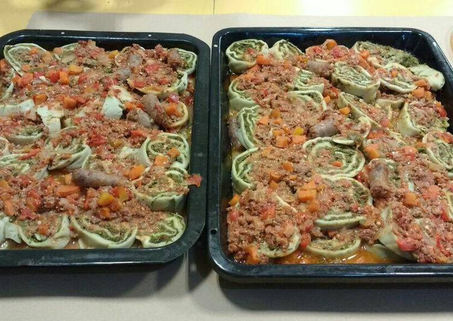

Fideos rellenos
Esta es una receta práctica y económica en la que se puede reemplazar la harina blanca por harina integral.

Ingredientes
8 comensales
Masa de Fideos
- 1 kg de harina 0000
- 3 huevos
- 2 taza agua tibia (aproximadamente)
- 3 cucharadas aceite oliva o girasol
- c/n sal
Relleno
- 4 atados acelga medianos
- 300 g ricota
- 750 g carne molida o picada
- c/n sal y pimienta
Salsa
- 2 botellas tomate triturado
- 1 kg cebolla
- 1 kg carne molida o picada
- 1 diente ajo
- 250 g crema de leche
- 500 g salchicha parrillera
- c/n sal y pimienta
- 1 cucharada ají molido y pimentón extra dulce
Pasos
- Relleno: Lavar las hojas de acelga y colocar a hervir en una olla con la mitad de agua (hoja sin tallo) dejar enfriar
- Luego de poner a hervir el acelga.
- Pelar las cebollas, lavarlas y cortarlas en cubos pequeños.
- Poner a dorar en una sartén con aceite caliente
- Después de dorar las cebollas en la misma sartén agregar la carne picada y una pizca de sal y pimienta. En fuego medio
- Nuevamente volver a la acelga fría y hervida ponerla en una olla limpia y la triturar con una minipimer.
- En la misma olla, verter la cebolla y la carne ya cocida implementar la ricota, más sal y pimienta para luego mezclar todo y ponerla sobre fuego mínimo durante unos 15 minutos y dejar enfriar
- Para la Salsa: Pelar las cebollas; volver a cortar en cubos pequeños dorar en sartén caliente con aceite.
- En una olla a fuego mínimo verter el tomate triturado con el ajo, picado bien chiquito, por 30 minutos
- En la sartén, con las cebollas una vez lista, incorporar la carne, sal, pimienta y dejar hasta que esté lista la carne.
- En la olla que contiene el tomate incorporar lo de la sartén (cebolla carne) seguir a fuego mínimo durante 15 minutos luego verter la salchicha parrillera cortadas en tiras no mayor a 5cm seguir a mínimo unos 20 minutos más. Dejar enfriar para luego retomar
- Para la Masa, en un bols, tirar harina, sal, los huevos, y las cucharadas de aceite; mezclar, vertir el agua tibia, volver a mezclar hasta formar unos bollos lisos y dejar descansar las masa unos 10 minutos
- Retomamos con la masa, amasamos y la dejamos en láminas con una pasta linda o con un palo de amasar el espesor no debe superar los 3 milímetros
- Con las láminas lista y el relleno terminado y frío. En una lámina poner el relleno en forma de una capa, no muy fina ni muy gruesa.
- Empezar a enrollar presionando tipo canelón cuando ya está listo el fideos envolver en un lienzo y atarlo con hilo de algodón en las puntas y en el medio.
- Poner los fideos en una olla a hervir a fuego medio durante 1 hs
- Retomar la salsa poner fuego mínimo agregar la crema dejar 10 minutos
- Una vez terminado todo se cortan los fideos en rodajas.
- En una bandeja para horno o microondas poner salsa una capa encima agregar las rodajas, nuevamente salsa y por último queso
- Nota: La salsa más tiempo la dejan macerar mejor queda al igual que el relleno yo acostumbro hacerlo 1 día antes.